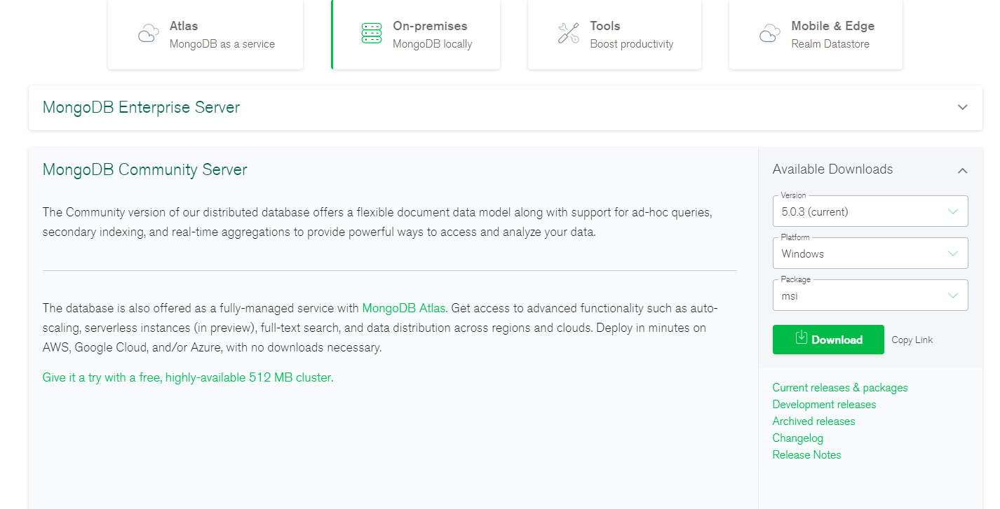
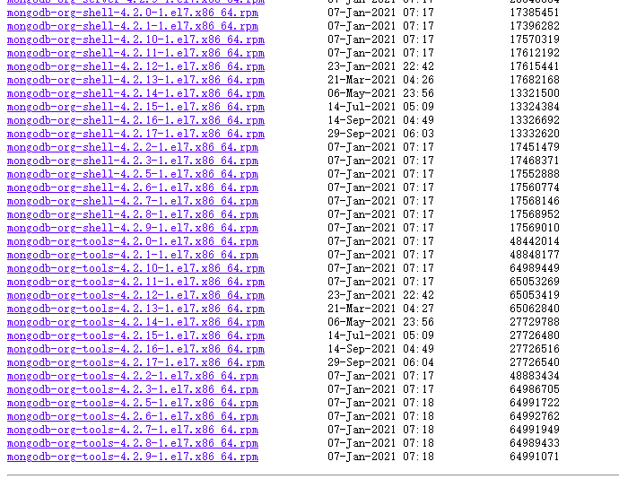
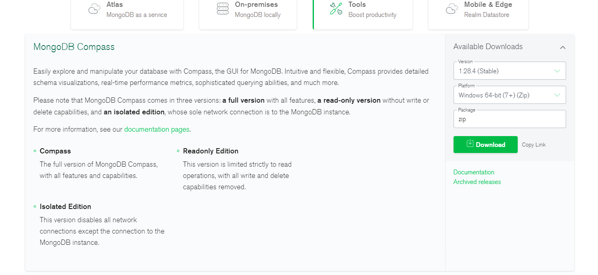
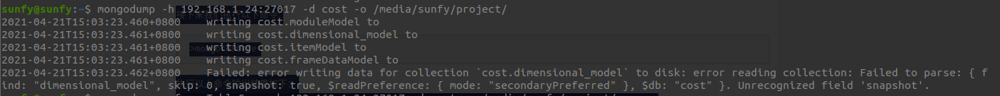
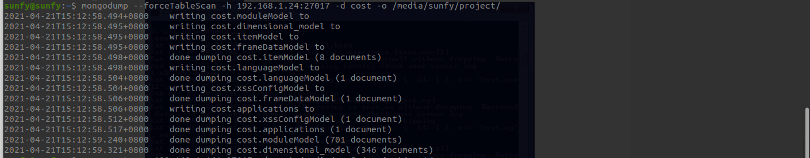
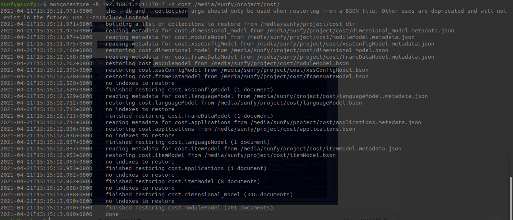

MongoDB 备份(mongodump)与恢复(mongorestore)
下载
1 | Mongodb的官网是https://www.mongodb.com |


1 | yum -y install https://mirrors.aliyun.com/mongodb/yum/redhat/7/mongodb-org/4.2/x86_64/RPMS/上面文件名字 |
安装完之后，是一个服务。 服务名字mongod.service
systemctl enable mongod.service
systemctl start mongod.service
MongoDB Compass
1 | 地址：[https://www.mongodb.com/download-center/compass](https://links.jianshu.com/go?to=https%3A%2F%2Fwww.mongodb.com%2Fdownload-center%2Fcompass)。 |
同样的可以选择对应的版本下载并根据步骤安装

MongoDB数据备份
在Mongodb中我们使用mongodump命令来备份MongoDB数据。该命令可以导出所有数据到指定目录中。
mongodump命令可以通过参数指定导出的数据量级转存的服务器。
语法
mongodump命令脚本语法如下：
1 | >mongodump -h dbhost -d dbname -o dbdirectory |
-h：
MongoDB 所在服务器地址，例如：127.0.0.1，当然也可以指定端口号：127.0.0.1:27017
-d：
需要备份的数据库实例，例如：test
-o：
备份的数据存放位置，例如：c:\data\dump，当然该目录需要提前建立，在备份完成后，系统自动在dump目录下建立一个test目录，这个目录里面存放该数据库实例的备份数据。
实例
在本地使用 27017 启动你的mongod服务。打开命令提示符窗口，进入MongoDB安装目录的bin目录输入命令mongodump:
1 | mongodump -h 192.168.1.24:27017 -d cost -o /media/sunfy/project/ |
导出过程中可能会出现如下错误：

此问题的原因是因为本机mongo版本同服务器版本不一致导致，添加--forceTableScan问题解决
导出成功截图：

mongodump 命令可选参数列表如下所示：
| 语法 | 描述 | 实例 |
|---|---|---|
| mongodump —host HOST_NAME —port PORT_NUMBER | 该命令将备份所有MongoDB数据 | mongodump —host runoob.com —port 27017 |
| mongodump —dbpath DB_PATH —out BACKUP_DIRECTORY | mongodump —dbpath /data/db/ —out /data/backup/ | |
| mongodump —collection COLLECTION —db DB_NAME | 该命令将备份指定数据库的集合。 | mongodump —collection mycol —db test |
MongoDB数据恢复
mongodb使用 mongorestore 命令来恢复备份的数据。
语法
mongorestore命令脚本语法如下：
1 | >mongorestore -h <hostname><:port> -d dbname <path> |
—host <:port>, -h <:port>：
MongoDB所在服务器地址，默认为： localhost:27017
—db , -d ：
需要恢复的数据库实例，例如：test，当然这个名称也可以和备份时候的不一样，比如test2
—drop：
恢复的时候，先删除当前数据，然后恢复备份的数据。就是说，恢复后，备份后添加修改的数据都会被删除，慎用哦！
： mongorestore 最后的一个参数，设置备份数据所在位置，例如：c:\data\dump\test。
你不能同时指定
和 —dir 选项，—dir也可以设置备份目录。 —dir：
指定备份的目录
你不能同时指定
和 —dir 选项。
接下来我们执行以下命令:
1 | mongorestore -h 192.168.1.161:27017 -d cost /media/sunfy/project/cost/ |
执行以上命令输出结果如下：


...
...
Copyright 2021 sunfy.top ALL Rights Reserved